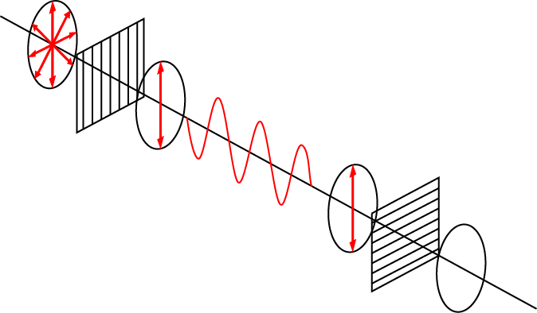
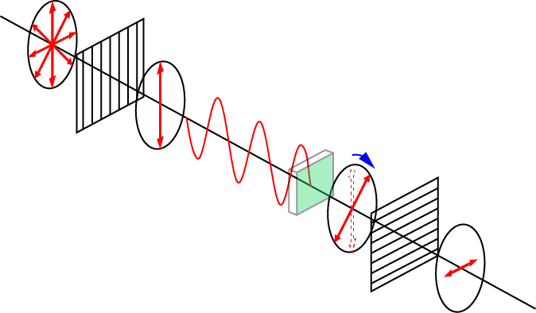

偏光顕微鏡のなぞ-02
なぜ，偏光が回転する？

まずは，図のような光学系を考えましょう（上図の正弦波は，これ，で作成しました．）．
二枚の偏光板を垂直に接している（クロスニコル）ので，左上から来た自然光は左上の偏光板で縦変更となり，右下の偏光板ですべて遮られます．
従来の私の理解では，この二枚の偏光板の間に複屈折性を示す生体試料を設置すると，偏光面が回転すると理解していました．

従って，右下の偏光板で一部の光が透過して物体の存在を観察できる，という理解でした．
次ページに偏光面の回転を数学的に考えていきましょう．